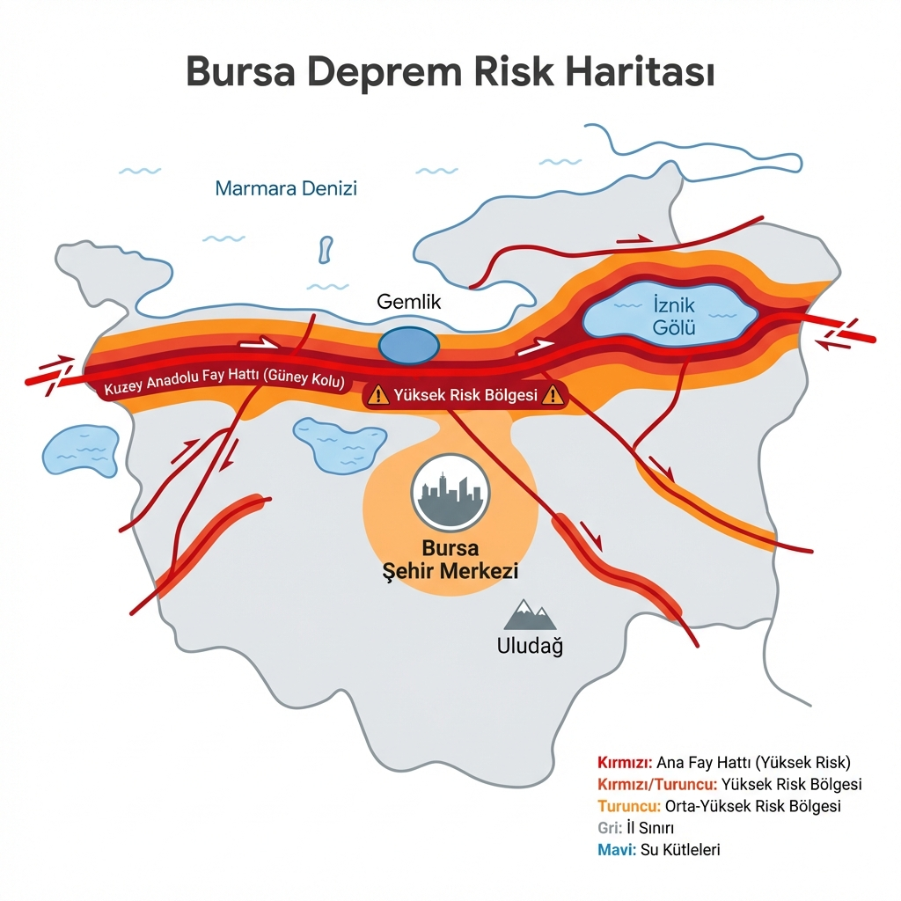

Bursa'da Az Önce Deprem Oldu mu?
Deprem Anında Üç Adım: Çök, Kapan, Tutun


Veriler yükleniyor...
Son Bursa Depremleri
| Tarih/Saat | Büyüklük | Derinlik | Konum |
|---|---|---|---|
| Kayıtlar yükleniyor... | |||
Bursa Fay Hatları ve Gemlik Riski

Bursa, Kuzey Anadolu Fay Hattı'nın güney kolu üzerinde yer alan ve tarihsel olarak büyük depremler yaşamış bir şehirdir. Özellikle Gemlik ve İznik hatları, sismik aktivitenin yoğun olduğu bölgelerdir. Uzmanlar, 1855 yılında yaşanan "Küçük Kıyamet" depreminin benzerinin tekrarlama periyoduna yaklaşıldığı konusunda uyarılarda bulunmaktadır.
Şehir merkezindeki alüvyon zemin ve yoğun yapılaşma, olası bir depremde riski artıran faktörlerdendir. Yıldırım, Osmangazi ve Nilüfer ilçelerindeki eski yapı stokunun kentsel dönüşüm ile yenilenmesi hayati önem taşır. Ayrıca, sanayi bölgelerinin yoğunluğu nedeniyle deprem sonrası ikincil afetler (yangın, kimyasal sızıntı) riski de göz önünde bulundurulmalıdır.
Bursa Toplanma Alanları
AFAD'ın resmi e-Devlet toplanma alanı sorgulama servisini kullanarak mahallenizdeki güvenli noktaları öğrenebilirsiniz.
Bursa İçin Hazırlık Tavsiyeleri
- Gemlik ve Mudanya gibi sahil ilçelerinde tsunami riskine karşı tahliye planı yapın.
- Sanayi sitelerinde çalışanlar için iş yeri acil durum planlarını gözden geçirin.
- Uludağ eteklerindeki yerleşimlerde heyelan riskine karşı dikkatli olun.
- Tarihi Hanlar Bölgesi gibi dar sokaklı alanlarda depreme yakalanırsanız binalardan uzak açık avlulara yönelin.